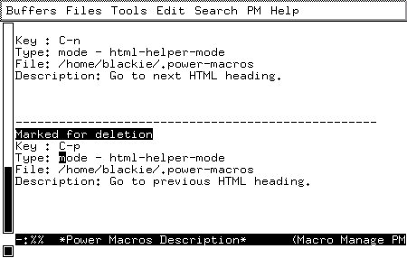

![[ TABLE OF CONTENTS ]](../gx/indexnew.gif)
![[ FRONT PAGE ]](../gx/homenew.gif)

![[ Linux Gazette FAQ ]](./../gx/dennis/faq.gif)

Emacs can eliminate the repetitive work with a very useful concept called macros. Macros are basically keystrokes that Emacs types for you.
This article will teach you about Emacs macros and show you a number of useful examples. Furthermore, it will teach you about an Emacs package I written called power-macros, which makes it very easy to bind macros to keys and to save them to a file for use in later Emacs sessions.
When a macro has been defined you may ask Emacs to imitate your keystrokes as often as you want simply by pressing C-x e.
(global-set-key [(shift f1)] 'call-last-kbd-macro)
Imagine that you often want to make the current word in boldface (in HTML documents), you could simply do that by inserting <b> and </b> around the word. That's no big job, but if you are copy-editing a book, where you need to make words in boldface hundreds of times each hour, then a macro, that can do this may really spare you a lot of time.
The macro is easily recorded: Go to the beginning of the word, insert <b>, go to the end of the word, insert </b>, and there you are!
Ohhh, not so fast! There is one very important point to notice about this you are not allowed to go to the beginning respectively the end of the word by pressing the arrow key a number of times! Why not? Well if you do, then the macro will fail to find the border of the word if your word is of a different length than the word used when defining the macro. You must therefore instead use the commands forward-word and backward-word. These commands are bound to control and the arrow keys. Thus to go to the beginning of a word, simply press control and the left arrow key.
Basically there exist two kinds of macros: those that are used now and again, and those that are used a number of times in a row and then never used again. The above is an example of a macro of the first kind. The description of the second kind is out of the scope for this article, but an example could be a macro, that added /* REMOVE: to the beginning of a line, and */ to the end of a line. You may use such a macro a number of times in a row, to comment out a whole function in C for later removal.
for (bool cont=iterator.First(value); cont; cont=iterator.Next(value)) {
...
}
The only difference from occasion to occasion is the names cont,
iterator, value, and of course the content in between the
curly brackets.If you insert the code above often, then you may wish to build a macro, which will help you with this. Your first attempt may be to define a macro, which simply inserts:
for (bool =.First(); ; =.Next()) {
}
That is, a macro that simply leaves out all the parts that may change from
time to time. This is, however, not as useful as it could be, simply
because you would need to type cont three times, and iterator
and value each two times. What you really would need was for Emacs
to ask you about the names to use instead of cont,iterator,
and value.Guess what? you can do that with macros! The trick is called recursive editing. With recursive editing you tell Emacs to stop at a specific place in the macro, you do some editing, and when you are done you tell Emacs to continue with the macro.
When you record the macro, you may tell Emacs to enter recursive editing by pressing C-u C-x q. Then whenever you execute the macro Emacs will stop macro execution at that point and let you do some editing, and the macro will first continue when you press C-M-c (That is control-meta-c, if there is no meta key on your keyboard it is most likely the alt key instead.).
While you record the macro, Emacs will also enter recursive editing at that point. That is, the editing you do from the point you press C-u C-x q and till you press C-M-c will not be part of the macro.
Ok, we are almost ready to develop a very neat and useful macro, but first lets exercise what we've learned above with a simple example. Type the following:
C-x ( Type a word ==> C-u C-x qNow type Hello World, and when done, continue typing the following:
C-M-c <== C-x )The above inserted the following text into your buffer: Type a word ==>Hello World<==. Furthermore it also defined a macro, which inserts this text except for the words Hello World. Whenever you execute the just defined macro Emacs will pause after having inserted Type a word ==>, and when you press C-M-c, it will continue with the macro, which means that it will insert the text <==.
Can you see where we are heading? Now we have the tools to ask the user for the three names needed, so all we need now is a way to fetch the information he typed and insert it at the appropriate places.
Fetching the information could be done in several ways. The simplest way (that is the one, which requires the smallest knowledge about Emacs) would simply be to switch to a temporary buffer, let the user type in the information there, and whenever one of the words are needed, simply go to this buffer, and fetch it there.
A much smarter way is to use registers. A register is a container where you may save the text of the current region for later use. To insert text into a register, mark a region, and press C-x r s and a letter (the letter indicates which of the registers to save the information to) Later you may insert the content of the register into the buffer by pressing C-x r i and pressing the letter you typed above.
Now that's it. Below you can see all the keystrokes needed to record this macro. Text in between quotes should be typed literally, and text in italic are comments, which you should not type.
It may seem like much to type to obtain this, but on the other hand, when you are done, you will have a very user friendly interface to inserting the given for-loops.
"Bool: " C-space This will set the mark - that is one end of the region
C-u C-x q Type the name of the first bool here
C-x C-x This will make the region active
C-x r s a Copy the just typed word to the register named a
C-a C-k Delete the line, as the just inserted text should not be part of the buffer
"Iterator: " Now continue as above, and save to register b
"Value: " Once again continue and this time save to register c
"for (bool " Now we've started to actually type the for-loop
C-x r i a Insert the name of the boolean
"= " C-x r i b Insert the name of the iterator
C-e ".First(" C-x r i c The name of the value
C-e "); " C-x r i a C-e "; " C-x r i a C-e " = " C-x r i b C-e ".Next(" C-x r i c C-e ")) {" Return "}"
To use this Emacs package, download the file from its home page. Copy the lisp file to somewhere in your load path, and insert the following into your .emacsfile:
(require 'power-macros) (power-macros-mode) (pm-load)If you do not know what a load path is, or do not have one, then create a directory called Emacsin your home directory, copy the file to this directory, and insert the following line into your .emacs file before the lines above:
(setq load-path (cons "~/Emacs" load-path))When that is done, you may simply press C-c n, when you have defined a macro, and Emacs will ask you the following questions in the mini-buffer:
As an example of a mode specific macro, think about the for-loop-macro from the example above. This macro is only useful when writing C++ programs. Furthermore you may need a similar macro for programming Java (which of course use Java syntax rather than C++ syntax). With power-macros you may bind both the macro for C++-mode and the macro for Java-mode to the same key (say C-M-f), and then the correct one will be used in the given mode.
So there I was, less than an hour to my speech and my presentation program didn't work! What should I do?! The answer was kind of obvious, why not make the presentation using Emacs?! Fortunately the input to the other presentation program was ASCII, and the only construct I used in the presentation was enumerated lists, so it was very easy to rewrite the presentation so it looked good in an Emacs buffer (with a slightly enlarged font). Now there was only one problem: How could I easily go forward/backward one presentation page?
Can you guess what the answer was? Yes you are right, the answer was to create two macros. One going forward one page, and another going backward one page.
Going forward one page was done the following way:
The two macros should therefore be saved to a separate file, and whenever needed I could simply load them. Loading a power macro is done by using the function pm-load. Thus I could load the macros by pressing M-x typing pm-load, pressing enter, and typing the name of the file to load. Loading the macros for the presentation could be done even more automatic, by inserting the following lines as the very last lines of the file:
Local Variables: eval: (pm-load "presentation.macro") End:In the above it is assumed that the name of the file containing the macros is called presentation.macro.
Now Emacs automatically loads the presentation macros whenever the file is opened.

What you see in this buffer is your power macros, each separated with a
line of dashes. Many of the keys have special meaning in this buffer (Just
like the keys have special meaning in the buffer managing buffer or in the
dired buffer).
By pressing the enter key on top of one of the fields lets you edit the given field. Editing a field does in fact mean either to change its content, or to copy the macro to a new one with the given field changed. You specify whichever of these meanings you intend, when you have pressed enter on the field.
Deletion of macros is done in two steps, first you mark the macros which you want to delete, and next you tell Emacs to actual delete them. If you know either the buffer managing buffer or dired-mode, then you will be familiar with this two step process.
Jesper Kjær Pedersen <blackie@ifad.dk>